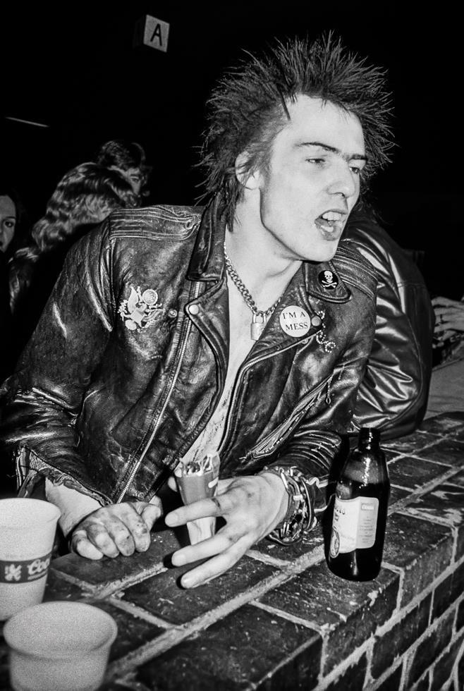
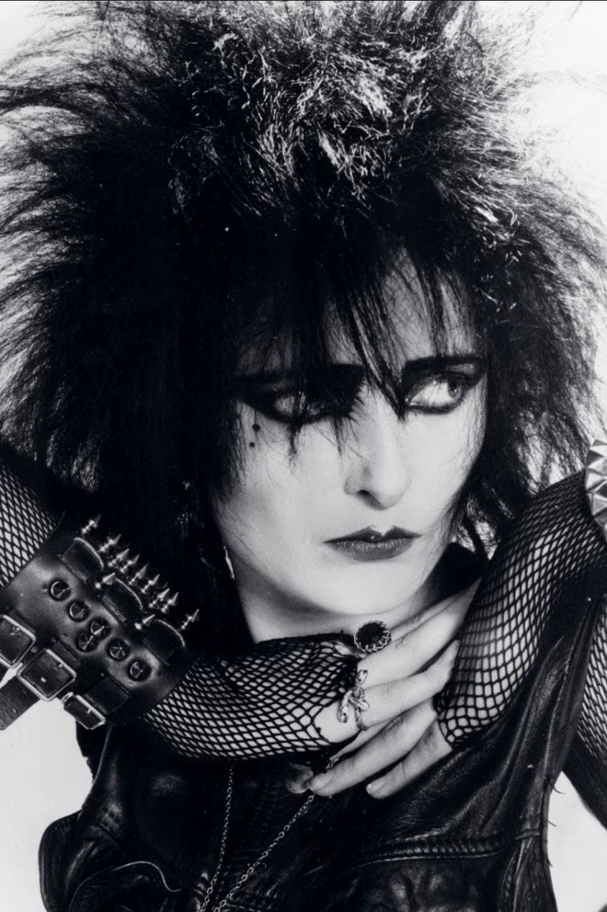

"les hippies étaient des gens pas super cools qui voulaient paraître sympas, les punks étaient des gens super cools qui voulaient avoir l'air pas sympas"
anonyme
Fin des années 1970, le punk est mort. La radicalité laisse place au conformisme et le NO FUTURE est rangé dans un tiroir au fond d’une cave, toute la scène musicale rentre dans le rang. Toute? Non... Une poignée d’irréductibles chevelus à la capillarité audacieuse résiste encore et toujours à l’écœurante banalité du quotidien. Le post-punk pose ses premières briques, la new-wave accorde ses synthés, et les morts sortent de terre.
Dans une dynamique plus introvertie voire élitiste, quelques avant-gardistes remanient les codes et imposent leur vision dans un monde qu’ils jugent au mieux endormi, les chauves-souris se réveillent...